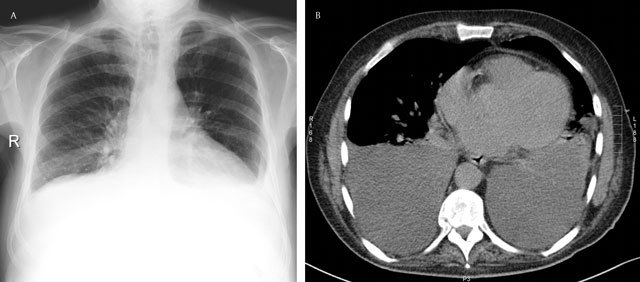
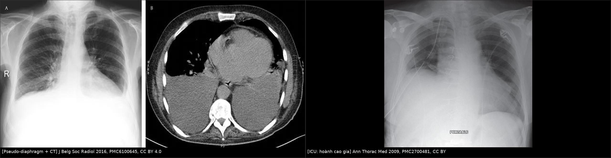
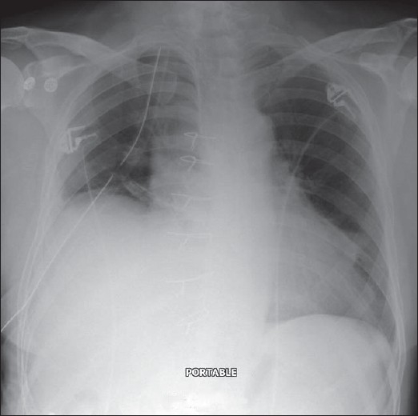
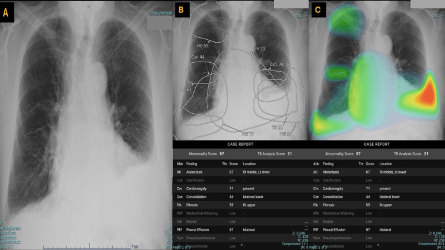

1888 — Tràn dịch dưới đáy phổi giả nâng cao cơ hoành / Subpulmonic effusion
Tags: pattern:nang-cao-nua-hoanh pattern:mo-day-phoi pattern:mat-lien-tuc-co-hoanh pattern:thay-doi-theo-tu-the vung:mang-phoi vung:co-hoanh vung:phoi protocol:Xquang-nghieng protocol:SA-mang-phoi protocol:phim-nghieng-tu-the
Mức chắc chắn (certainty): tổng hợp y văn (literature synthesis) — số liệu từ tổng quan hình ảnh màng phổi có đối chiếu CT (PMC6100645), bài giảng X-quang bệnh nhân nặng (PMC2700481), ca lâm sàng 2026 có siêu âm xác nhận (PMC12970633), chương X-quang ngực kinh điển (PMC8139021, PMC7122111) và bài so sánh 4 dấu CT dịch màng phổi–cổ trướng (PMC9623851).
Câu chốt: Ở tư thế đứng, dịch màng phổi tích tụ ĐẦU TIÊN giữa đáy phổi và cơ hoành, không phải ở góc sườn hoành. Vì dịch cùng tỉ trọng với gan/lách/cơ hoành, dấu bóng (silhouette sign) làm nó biến mất — trên phim chỉ còn "một nửa hoành cao". Đây là kẻ bắt chước số 1 của liệt hoành và là lý do hay nhất khiến dịch màng phổi bị bỏ sót trên X-quang. Chốt chẩn đoán không phải "hoành cao bao nhiêu" mà là: đỉnh hoành lệch ra ngoài, khoảng cách hoành–bóng vị > 1 cm, không có nghịch thường, và thay đổi theo tư thế — xác nhận bằng siêu âm hoặc phim nghiêng tư thế.
1. Tổng quan bệnh học – cơ chế hình ảnh
1.1 Vì sao dịch lại nằm "dưới đáy phổi"
- Giải phẫu: góc sườn hoành sau (posterior costophrenic sulcus) là phần sâu nhất của khoang màng phổi — sâu hơn góc sườn hoành bên trên phim thẳng. Vì vậy ở tư thế đứng, dịch chảy xuống khoang dưới đáy phổi, nằm giữa mặt dưới phổi và mặt trên cơ hoành.
- Hệ quả hình ảnh: màng phổi tạng + lá phổi đè lên túi dịch → mặt phân cách dịch–phổi có hình vòm, trông như cơ hoành → gọi là "hoành giả" (pseudo-diaphragm). Cơ hoành thật nằm dưới lớp dịch, bị che khuất.
- TẠI SAO không thấy đường mức dịch (meniscus): mức dịch chỉ thành hình khi dịch dâng lên theo thành ngực bên. Trong thể dưới đáy, dịch lan ra sau–dưới trước, còn góc sườn hoành bên có thể còn nguyên → không có meniscus, càng dễ đọc nhầm thành hoành cao.
1.2 Ngưỡng thể tích: vì sao X-quang "nuốt" mất dịch
- ≥ 200 mL dịch mới làm tù góc sườn hoành bên trên phim thẳng đứng; tới 500 mL vẫn có thể không tù nếu dịch phân bố dưới đáy (PMC6100645).
- Phim nghiêng nhạy hơn phim thẳng vì thấy góc sườn hoành sau — phần sâu nhất; phim nghiêng tư thế (lateral decubitus) còn nhạy hơn, và là cách phân biệt dịch tự do với dịch khu trú.
- Vì sao dịch dưới đáy "giả" hoành cao: dịch đẩy đáy phổi lên và đè cơ hoành xuống → khoảng cách giữa bóng hơi dạ dày và "hoành" tăng. Bình thường khoảng cách này ≤ ~1 cm; > 1 cm gợi ý tràn dịch dưới đáy hoặc khối (PMC7122111).
- Vì sao đỉnh hoành lệch ra ngoài: cột dịch dày nhất ở phía sau–ngoài, nên điểm cao nhất của "hoành giả" bị đẩy từ 1/3 trong ra 1/3 giữa–ngoài của lồng ngực (PMC6100645).
1.3 Tư thế nằm ngửa: mặt cắt "mù" nhất
- Khi nằm ngửa, dịch chảy ra sau thành một lớp mỏng → không còn hoành giả, chỉ còn mờ đều nửa dưới phổi: mất bờ cơ hoành, mất thấy mạch máu thùy dưới, dày khe rãnh, mờ đỉnh phổi (apical cap sign), lách tăng đậm độ ở bên trái (PMC6100645).
- TẠI SAO dễ bỏ sót: cùng đậm độ nước, không có đường bờ → không có "vật thể" để nhìn; phim ngửa tại giường còn bị phổi ít hít vào làm mờ thêm. Vì vậy siêu âm tại giường là bước bù trừ bắt buộc ở bệnh nhân nặng.
2. Mẫu hình + chẩn đoán phân biệt theo vị trí (gamut)
- Mẫu hình chung: nửa hoành "cao" + đỉnh lệch ra ngoài + góc sườn hoành bên còn/không tù + không nghịch thường + thay đổi khi đổi tư thế.
- Gamut theo vị trí phân bố dịch:
- Dưới đáy phổi (subpulmonic): thể hay nhầm nhất; hoành giả, đỉnh lệch ngoài.
- Thành ngực bên (free lateral): meniscus kinh điển, tù góc sườn hoành.
- Đỉnh phổi khi nằm ngửa (apical cap): dấu sớm, dễ bỏ sót.
- Trong khe rãnh (fissural/phantom tumor): khối giả hình thấu kính, đổi hình khi đổi tư thế.
- Khu trú (loculated): bờ rõ, không chảy theo tư thế; gặp sau mủ/ máu màng phổi, sau mổ.
- Gamut "hoành cao" (7 nhóm): dịch dưới đáy · liệt hoành (bài 1849, 1889) · xẹp phổi thùy dưới · giãn cơ hoành (eventration) · Chilaiditi (đại tràng giữa gan–hoành) · áp-xe/khối dưới hoành · gan/lách to.
3. Bảng so sánh phân biệt (ma trận đối chiếu)
| Thực thể (entity) | Hình ảnh điển hình (X-quang/SA/CT) | Chốt vào (rule-in) | Chốt loại (rule-out) | Gợi ý xác nhận |
|---|---|---|---|---|
| Tràn dịch dưới đáy phổi | Hoành giả, đỉnh lệch 1/3 giữa–ngoài, > 1 cm tới bóng vị, không meniscus, không nghịch thường | Đỉnh lệch bên + thay đổi theo tư thế + siêu âm thấy dịch | Nghịch thường thật + hoành cao đều, đỉnh ở 1/3 trong → liệt | Siêu âm màng phổi; phim nghiêng tư thế; CT |
| Liệt cơ hoành | Hoành cao đều, đỉnh vẫn ở 1/3 trong, M-mode đi lên khi hít vào | Nghịch thường khi sniff/hít vào | Đỉnh lệch ngoài, không nghịch thường → không phải liệt | Siêu âm M-mode + sniff (bài 1849) |
| Xẹp phổi thùy dưới | Hoành cao + dấu mất thể tích: khe/trung thất kéo về, phế quản hơi trong vùng mờ | Mất thể tích + phế quản hơi | Không mất thể tích, không phế quản hơi → dịch | CT ngực |
| Giãn cơ hoành (eventration) | Hoành cao nhẵn, liên tục, đỉnh ở vị trí bình thường, không mờ đáy | Bẩm sinh, không tiến triển, không dịch | Siêu âm có dịch + đổi theo tư thế → tràn dịch | So phim cũ; CT/SA |
| Chilaiditi | Bóng hơi có vân (haustra) giữa gan và hoành; bờ hoành liên tục | Thấy rõ vân đại tràng dưới hoành | Bóng hơi không vân, dưới hoành giả → dạ dày/dịch | CT; đổi tư thế |
| Áp-xe dưới hoành | Mức khí–dịch dưới hoành, hoành cao, sốt, đau bụng | Mức khí–dịch + hội chứng nhiễm trùng | Không mức khí–dịch, không sốt → ít nghĩ | CT bụng có cản quang |
| Khối/u đáy phổi hoặc trung thất | Khối bờ rõ, có thể xẹp phổi do chèn ép; không đổi theo tư thế | Khối thấy trên CT, không phải dịch | Siêu âm: khối đặc, không thay đổi theo nhịp thở | CT ngực có cản quang |

(A) Phim thẳng: hai nửa hoành "cao" — nhưng đây là mặt trên của dịch (hoành giả); mạch máu trong phổi bị xóa ở đáy, góc sườn hoành bị tù; bóng hơi dạ dày không thấy. (B) CT ngang cùng bệnh nhân: dịch hai bên (đậm độ nước) nằm sau và dưới đáy phổi — chứng minh "hoành cao" trên phim là dịch. Nguồn: J Belg Soc Radiol 2016, PMC6100645, CC BY 4.0.
Trái: đỉnh hoành phải lệch ra ngoài (1/3 giữa–ngoài) — dấu peak sign của dịch dưới đáy. Phải: phim tại giường ở bệnh nhân hồi sức, "hoành phải cao" thực chất là dịch dưới đáy — kèm dẫn lưu màng phổi đặt sai vị trí (biến chứng của việc đọc nhầm). Nguồn: J Belg Soc Radiol 2016 (PMC6100645) và Ann Thorac Med 2009 (PMC2700481), cả hai CC BY. Ảnh ghép letterbox, không crop/kéo giãn.4. Protocol chụp + ngưỡng + thuật toán
4.1 Trình tự (rẻ → đắt, X-quang → siêu âm → CT)
- X-quang ngực thẳng, đứng, hít vào tối đa: đo khoảng cách đỉnh "hoành" – bóng hơi dạ dày; xác định vị trí đỉnh (1/3 trong = bình thường; 1/3 giữa–ngoài = nghi dịch); tìm góc sườn hoành bên và mờ đáy.
- Phim nghiêng (nếu chụp được): xem góc sườn hoành sau — nơi dịch đọng sớm nhất.
- Phim nghiêng tư thế (lateral decubitus) khi nghi dịch mà phim thẳng không rõ: dịch tự do sẽ chảy thành lớp; không chảy = khu trú.
- Siêu âm màng phổi tại giường (ưu tiên ở bệnh nhân nặng): tìm khoảng trống âm (anechoic) trên cơ hoành, dấu tứ giác (quad sign), dấu hình sin (sinusoid sign) khi thở; đánh giá vách/tổ chức (máu cục, mủ) và hướng dẫn chọc hút.
- CT ngực khi: cần phân biệt dịch – khối – xẹp, nghi khu trú/empyema, hoặc dịch đục/tổ chức hóa; CT cũng là nơi xác nhận dịch dưới đáy rõ nhất.
4.2 Ngưỡng định lượng
| Chỉ số | Bình thường | Bất thường / ý nghĩa |
|---|---|---|
| Thể tích dịch để tù góc sườn hoành bên (phim thẳng đứng) | — | ≥ 200 mL; có thể tới 500 mL mà không tù (PMC6100645) |
| Khoảng cách "hoành"–bóng hơi dạ dày | ≤ ~1 cm | > 1 cm = nghi tràn dịch dưới đáy hoặc khối (PMC7122111) |
| Vị trí đỉnh hoành | 1/3 trong | 1/3 giữa–ngoài = nghi dịch dưới đáy (PMC6100645) |
| Đậm độ dịch trên CT | — | 0–20 HU (dịch trong); 30–60 HU (máu); cổ trướng cùng 0–20 HU → không phân biệt bằng HU |
| Tiêu chuẩn Light (dịch/máu ngoại vi) | — | Protein dịch/máu > 0,5 hoặc LDH dịch/máu > 0,6 hoặc LDH dịch > 2/3 ULN = dịch tiết (bài 040) |
| Dấu CT dịch màng phổi vs cổ trướng | — | Interface sign, bare area sign, displaced crus sign, diaphragm sign (PMC9623851) |
4.3 Thuật toán "hoành cao trên phim"
flowchart TD
A[Hoành cao một bên trên X-quang] --> B{Đỉnh hoành ở đâu?}
B -->|1/3 trong| C{Siêu âm: có nghịch thường?}
B -->|1/3 giữa-ngoài| D[Nghĩ tràn dịch dưới đáy]
C -->|Có| E[Liệt hoành: xem bài 1849/1889]
C -->|Không| F{Có mất thể tích?}
F -->|Có| G[Xẹp phổi thùy dưới]
F -->|Không| H[Eventration / Chilaiditi / khối dưới hoành]
D --> I[Siêu âm màng phổi + phim nghiêng tư thế]
I --> J{Dịch tự do?}
J -->|Có| K{Đủ lớn / có triệu chứng / cần chẩn đoán?}
J -->|Không| L[Khu trú: CT, cân nhắc dẫn lưu có hình ảnh]
K -->|Có| M[Chọc hút/dẫn lưu dưới siêu âm + xét nghiệm dịch]
K -->|Không| N[Theo dõi, điều trị nguyên nhân, chụp lại]
4.4 Khi nào chọc dịch — và khi nào không
- Chọc chẩn đoán mọi tràn dịch mới, chưa rõ nguyên nhân, nhất là một bên, sốt, đau ngực, sụt cân, hoặc dịch không đáp ứng điều trị.
- Chọc điều trị khi dịch nhiều gây khó thở, dịch dưới đáy lớn gây xẹp đáy phổi, hoặc cần dẫn lưu mủ.
- Không chọc mù khi: dịch khu trú nhỏ, rối loạn đông nặng, nhiễm trùng thành ngực, hoặc nghi phình động mạch — dùng siêu âm/CT hướng dẫn.
- Sau khi chọc: không để dẫn lưu hút mạnh ở tràn dịch nhỏ; không đặt dẫn lưu chỉ dựa trên phim ngửa — ca trong PMC2700481 cho thấy dẫn lưu đặt sai vì tưởng "hoành cao".
5. Biến thể bình thường và cạm bẫy
- "Hoành cao" có thể là "dịch thấp": nếu đỉnh lệch ra ngoài và bóng vị cách xa "hoành" > 1 cm, mặc định là dịch cho tới khi chứng minh ngược lại.
- Hai bên đối xứng dễ bị bỏ qua: khi cả hai nửa hoành "cao" đều, mắt người đọc không có bên lành để so → satisfaction of search; luôn so khoảng cách tới bóng vị hai bên và tìm mờ đáy.
- Góc sườn hoành còn nguyên không loại trừ dịch: tới 500 mL vẫn có thể không tù (PMC6100645).
- Phim ngửa tại giường là phim dễ bỏ sót nhất: dấu hiệu chỉ còn mờ nửa dưới + mất bờ hoành + dày khe; nghi ngờ thì siêu âm ngay.
- Đừng gọi liệt hoành khi chưa xem động học: hoành cao do dịch không nghịch thường; gắn nhãn liệt dẫn tới tạo hình hoành oan (bài 1849).
- Chilaiditi không phải dịch, không phải tràn khí: bóng hơi có vân haustra, bờ hoành liên tục; chọc/dẫn lưu là sai lầm.
- "Hoành giả" có thể che một khối thật: nếu sau khi hút dịch mà đáy phổi vẫn mờ/hoành vẫn cao, CT lại — đừng kết luận "hết dịch là hết bệnh".
- Khu trú sau mủ/máu: dịch không chảy theo tư thế, bờ rõ; một dẫn lưu có thể không đủ — cần CT và có thể nhiều dẫn lưu.

Phim ngực thẳng tại giường: mờ đáy phổi phải, bờ "hoành" mất liên tục, dây thép xương ức; hình ảnh được báo là tràn dịch dưới đáy phổi giả nâng cao hoành, kèm dẫn lưu màng phổi đặt sai vị trí. Bài học: hoành cao trên phim ngửa không đủ để đặt dẫn lưu — phải xác nhận bằng siêu âm. Nguồn: Ann Thorac Med 2009, PMC2700481, CC BY.
Phim thẳng + đầu ra của hệ AI: tràn dịch hai bên, nhưng bên phải bị AI đánh giá thấp vì dịch phân bố dưới đáy, giả làm hoành cao và góc sườn hoành còn một phần. Siêu âm xác nhận tràn dịch dưới đáy phải. Bài học: AI học "meniscus" điển hình nên thể dưới đáy là điểm mù — không được dựa vào AI để loại trừ. Nguồn: Cureus 2026, PMC12970633, CC BY 4.0.6. Tự lượng giá — Blind Quiz
Ca 1 — Bệnh nhân khó thở, phim thẳng thấy "hai nửa hoành cao". Nhìn phim và CT, mô tả trước.
- Hỏi: đâu là cơ hoành thật? Dấu hiệu nào trên phim nói đó là dịch? Vì sao không thấy meniscus?
Bấm để hiện đáp án (findings + chẩn đoán)
- Findings: phim thẳng: "hoành" hai bên cao, mạch máu thùy dưới bị xóa, góc sườn hoành tù, không thấy bóng hơi dạ dày; CT: dịch hai bên (đậm độ nước) nằm sau–dưới đáy phổi.
- Chẩn đoán: tràn dịch màng phổi hai bên, thể dưới đáy — "hoành cao" là hoành giả (mặt trên túi dịch).
- Vì sao không meniscus: dịch đọng ở góc sườn hoành sau (sâu nhất) trước, chưa dâng lên thành ngực bên.
- Nguồn ảnh: J Belg Soc Radiol 2016, PMC6100645, CC BY 4.0.
Ca 2 — Bệnh nhân hồi sức, phim ngửa tại giường: "hoành phải cao". Bạn có đặt dẫn lưu ngay?
- Hỏi: 3 chẩn đoán phân biệt? Bước nào phải làm trước khi can thiệp? Ca này dạy gì về biến chứng?
Bấm để hiện đáp án
- Findings: mờ đáy phổi phải, bờ hoành mất liên tục, dây thép xương ức, bệnh nhân nằm ngửa.
- Phân biệt: tràn dịch dưới đáy, xẹp phổi thùy dưới, liệt hoành (kém hơn vì không có bối cảnh), giãn cơ hoành.
- Bước bắt buộc: siêu âm màng phổi tại giường (dịch/không dịch, khu trú/tự do) trước khi đặt dẫn lưu.
- Biến chứng trong ca: dẫn lưu đặt sai vị trí vì chẩn đoán dựa trên "hoành cao" — bài học: hình ảnh tĩnh trên phim ngửa không đủ định vị.
- Nguồn ảnh: Ann Thorac Med 2009, PMC2700481, CC BY.
Ca 3 — Hệ AI báo "tràn dịch hai bên" nhưng bên phải "khả năng thấp". Nhìn ảnh, giải thích vì sao.
- Hỏi: đặc điểm nào của thể dưới đáy làm AI và người đọc đều dễ đánh giá thấp? Xác nhận bằng gì?
Bấm để hiện đáp án
- Findings: dịch dưới đáy phải làm "hoành" cao và giữ lại một phần góc sườn hoành; AI bám mẫu meniscus điển hình nên cho xác suất thấp.
- Chẩn đoán: tràn dịch dưới đáy hai bên, bên phải bị đánh giá thấp; siêu âm xác nhận.
- Bài học: khi phim gợi "hoành cao" + góc sườn hoành còn một phần, chủ động nghĩ thể dưới đáy và xác nhận bằng siêu âm — không loại trừ bằng AI.
- Nguồn ảnh: Cureus 2026, PMC12970633, CC BY 4.0.
Bài liên quan chéo
- 040 – Tràn dịch màng phổi (nguyên nhân, Light, dẫn lưu)
- 045 – Thành ngực & hoành
- 1849 – Liệt cơ hoành một bên sau mổ tim/ngực (đối thủ chính)
- 1889 – Parsonage–Turner có tổn thương thần kinh hoành (hoành cao do thần kinh)
- 098 – Barotrauma & tràn khí màng phổi áp lực (khí dưới đáy — deep sulcus)
- 001 – Tổng quan hệ Ngực
Không dùng để chẩn đoán độc lập khi chưa có người hướng dẫn.